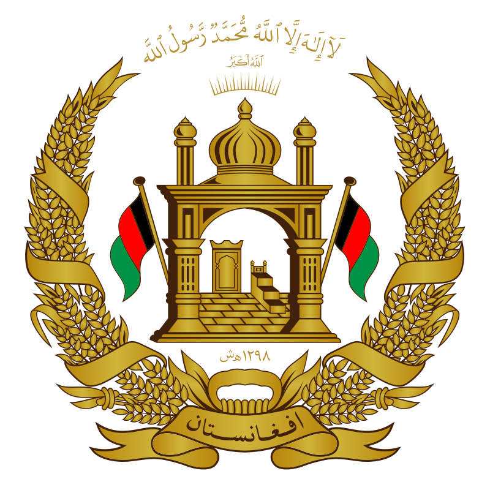

Ali-Asghar Muhammadi föddes 1999 i staden Ghazni, Afghanistan. Som sjuåring började han spela med sina barndomskompisar där han växte upp. 2015 var han tvungen att flytta från hemlandet pga osäkerheten, efter två och ett halvt månader hamnade han i Grimslöv, Sverige. Där började han tränade fotboll på ett professionllt sätt.
Klick här för att komma till Afghanistan